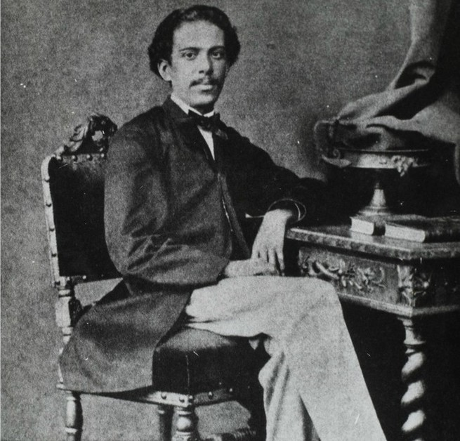
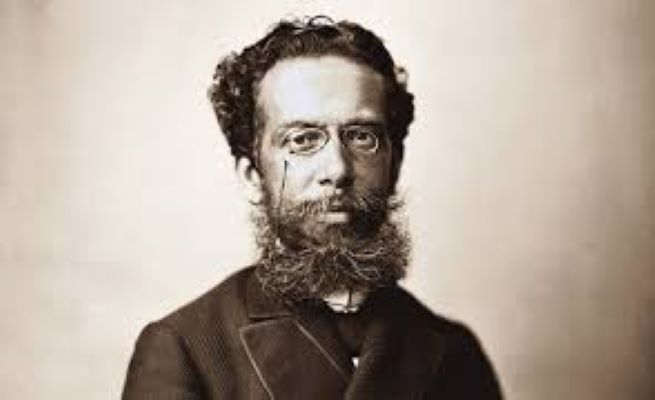

Resumo
Esse senhor é tido como o maior escritor do Brasil e, quem sabe, forte candidato a maior autor da língua portuguesa.
Machado de Assis foi um nome improvável no universo da literatura: nascido no morro, filho de um pintor de paredes com uma lavadeira, o rapaz teve origem humilde e ficou órfão de mãe quando ainda era pequeno.
Precisando trabalhar desde cedo, chegou a vender doces e esteve na escola pública durante pouco tempo. Mas Machado foi à luta, aprendeu francês sozinho, virou aprendiz de tipógrafo, começou a trabalhar como revisor, veio a colaborar para a imprensa e tornou-se funcionário público.
Seguiu a vida toda escrevendo e publicando de tudo um pouco: poesias, contos, romances, críticas. Quem diria que um mestiço com crises de epilepsia seria o maior nome da literatura nacional e se tornaria o primeiro presidente da Academia Brasileira de Letras?
Infância e Adolescência
Machado de Assis passou sua infância e adolescência no bairro do Livramento. Seus pais viviam na propriedade do falecido senador Bento Barroso Pereira e D. Leopoldina era a protegida de D. Maria Jose Pereira.
Machado fez seus primeiros estudos na escola pública do bairro de São Cristovão. Tornou-se amigo do padre Silveira Sarmento, o ajudava nas missas, familiarizava-se com o latim.
Quando tinha dez anos perdeu sua mãe. Viúvo, seu pai saiu da Chácara e foi morar em São Cristovão. Logo passou a viver com Maria Inês da Silva, só vindo a casar-se em 1854.
Sua madrasta trabalhava como doceira em uma escola e levava o enteado para assistir algumas aulas. À noite, Machado ia para uma padaria, local onde aprendia francês com o forneiro.
À luz de velas, Machado lia tudo que passava em suas mãos e já escrevia suas primeiras poesias.
Em busca de um emprego, com 15 anos, conheceu Francisco de Paula e Brito, dono da livraria, do jornal e da tipografia.
Carreira de Jornalista
No dia 12 de fevereiro de 1855, o jornal “Marmota Fluminense” trazia na página 3 o poema “Ela”, de Machado de Assis:
"Dos lábios de Querubim
Eu quisera ouvir um sim
Para alívio do coração"...
Daí por diante não parou de escrever na Marmota e de fazer amizades com os políticos e literatos, frequentadores da livraria, onde o assunto principal era a poesia.
Em 1856, Machadinho, como era conhecido, entrou para a Imprensa Oficial como aprendiz de tipógrafo, mas além de mau funcionário, escondia-se para ler tudo que lhe interessava.
O diretor decidiu incentivar o jovem e o apresentou a três importantes jornalistas: Francisco Otaviano, Pedro Luís e Quintino Bocaiúva.
Otaviano e Pedro dirigiam o Correio-Mercantil e para lá foi Machado de Assis, em 1858, como revisor de provas. Colaborava também para outros jornais, mas ganhava pouco e estava sempre sem dinheiro.
Com 20 anos, Machado de Assis já frequentava os círculos literários e jornalísticos do Rio de Janeiro, capital política e artística do Império.
Em 1960, Machado de Assis foi chamado por Quintino Bocaiúva para trabalhar na redação do “Diário do Rio de Janeiro”, que estava sendo preparado para reaparecer sob a direção política de Saldanha Marinho.
Além de escrever sobre todos os assuntos e manter uma coluna de crítica literária, Machado tornou-se o representante do jornal no Senado.
Machado também escrevia no “Jornal das Famílias”, onde suas histórias inconsequentes e açucaradas eram lidas nos serões familiares.

Poeta, Burocrata e Romancista
Em 1864, Machado de Assis publicou “Crisálidas”, uma coletânea de seus poemas. O livro foi dedicado a seus pais, Maria Leopoldina e a Francisco, que morrera naquele ano.
Em 1867, o Imperador concedeu a Machado o grau de "Cavaleiro da Ordem da Rosa", por serviços prestados às letras nacionais. No dia 8 de abril Machado foi nomeado ajudante do diretor do Diário Oficial, iniciando sua "carreira burocrática".
Em 1868 ele conheceu Carolina Xavier de Novais, uma portuguesa culta, irmã do poeta português Faustino Xavier de Novais, que lhe revelou os clássicos lusitanos.
No dia 12 de novembro de 1869, o casamento de Machado e Carolina é realizado, tendo como testemunhas, Artur Napoleão e o Conde de São Mamede, em cuja residência se realizou a cerimônia.
Em 1872, Machado de Assis publicou seu primeiro romance, “Ressurreição”. No dia 30 de janeiro de 1873, a capa do décimo número do “Arquivo Contemporâneo”, periódico do Rio de Janeiro, coloca lado a lado as fotos de José de Alencar, até então o maior romancista do Brasil, e a de Machado de Assis.
Ainda em 1873, ele foi nomeado primeiro oficial da Secretaria da Agricultura e, três anos depois assumiu a chefia da seção.
Em 1881, Machado de Assis publica o romance “Memórias Póstumas de Brás Cubas”, que marca o início da fase acentuadamente realista de sua obra. A obra havia sido publicada, no ano anterior, em folhetins na Revista Brasileira.

Academia Brasileira de Letras
Em 1896, fundou com outros intelectuais, a Academia Brasileira de Letras. Nomeado para a cadeira n.º 23, tornando-se, em 1897, seu primeiro presidente, cargo que ocupou até sua morte.
Na entrada do prédio há uma estátua de bronze do escritor. Em sua homenagem, a academia chama-se também “Casa de Machado de Assis”.
Últimos Anos e Morte
Em outubro de 1904 morreu sua esposa, Carolina, companheira de 35 anos, que além de revisora de suas obras era também sua enfermeira, pois Machado de Assis tinha a saúde abalada pela epilepsia.
Após a morte da esposa o romancista raramente saía de casa, Em homenagem à sua amada, escreveu o poema "À Carolina".
Machado de Assis faleceu no Rio de Janeiro, no dia 29 de setembro de 1908. Em seu velório, comparecerem as maiores personalidades do país. Rui Barbosa, um dos juristas mais aplaudidos da época, fez um discurso de despedida com elogios ao homem e escritor.
Levado em uma carreta do Arsenal de Guerra, só destinada às grandes personalidades, um grande cortejo fúnebre saiu da Academia para o cemitério de São João Batista, onde foi enterrado.